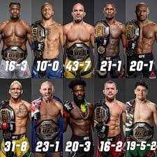

UFC posiada kilka kategorii wagowych, aby zapewnić równowagę między zawodnikami. Każda z dywizji ma swoje limity wagowe i własnych mistrzów. Oto kilka z najpopularniejszych kategorii:
W każdej dywizji UFC zawodnicy rywalizują o tytuł mistrza, a także o rankingi, które określają ich pozycję w lidze. Wprowadzenie kategorii wagowych było kluczowe dla rozwoju MMA, ponieważ pozwoliło na stworzenie bardziej zrównoważonych pojedynków, w których zawodnicy mają podobne warunki fizyczne.
Mistrzowie każdej dywizji są uznawani za najlepszych zawodników w swoim ciężarze, a walki o tytuł mistrza UFC są jednymi z najbardziej wyczekiwanych wydarzeń w kalendarzu MMA. Zawodnicy muszą przejść przez system rankingowy, aby zdobyć szansę na walkę o pas, a rywalizacje często są nazywane "walką o tytuł" w związku z ich dużą wagą w świecie sportu.
Choć nie będziemy wymieniać konkretnych zawodników, warto wspomnieć, że w każdej z dywizji UFC pojawiło się wielu znakomitych mistrzów, którzy na zawsze zapisali się w historii sportu dzięki swoim osiągnięciom i niesamowitym występom w oktagonie.